The data set that will be used for Support Vector Machine classification is the Wikipedia data. This data set contains sentences from various Wikipedia pages related to the search terms “Women’s Rights” and “Men’s Rights.” For the specific code that achieved these data sets, please refer to the data cleaning section. For further detail about these data sets, please refer to the exploring data section.
Theory
Support Vector Machines (SVMs) are supervised learning models that are used to analyze data for classification and regression. Given a plane of data points, the SVM aims to separate the data points via some linear or nonlinear boundary. Theoretically, there is an infinite number of these decision boundaries (also known as hyperplanes) with which to split the data; thus, the SVM learns which data points belong to which class to generate a good decision boundary that can best classify the given data.
James Hickman
For example, the above image is an example of the SVM’s classification process. From the dataset, the SVM lays out the data points onto a plane and iterates through different decision boundaries and learns the relationships among the data points during the process. Eventually, the SVM generates a good decision boundary to “split” the data points into different categories. Although the above image is a linear example, SVMs can also conduct similar processes for nonlinear data and is a more powerful tool to address nonlinear classification tasks.
Methods
Imports
Code
import sklearnfrom sklearn import datasetsimport numpy as npimport pandas as pdimport seaborn as snsimport matplotlib.pyplot as pltfrom sklearn.metrics import accuracy_scorefrom sklearn.metrics import precision_scorefrom sklearn.metrics import recall_scorefrom sklearn.metrics import confusion_matrix
First, we conduct some preprocessing on the text data. We separate results from Wikipedia pages for “Women’s rights” and “Men’s rights” and vectorize the text results.
Code
from sklearn.feature_extraction.text import CountVectorizer#CONVERT FROM STRING LABELS TO INTEGERS labels=[];#y1=[]; y2=[]y1=[]for label in df["label"]:if label notin labels: labels.append(label)print("index =",len(labels)-1,": label =",label)for i inrange(0,len(labels)):if(label==labels[i]): y1.append(i)y1=np.array(y1)# CONVERT DF TO LIST OF STRINGS corpus=df["text"].to_list()y2=df["sentiment"].to_numpy()
index = 0 : label = Women's rights
index = 1 : label = Men's rights
Vectorize
Code
# INITIALIZE COUNT VECTORIZER# minDF = 0.01 means "ignore terms that appear in less than 1% of the documents". # minDF = 5 means "ignore terms that appear in less than 5 documents".vectorizer=CountVectorizer(min_df=0.001,max_features=10000,stop_words="english") # RUN COUNT VECTORIZER ON OUR COURPUS Xs = vectorizer.fit_transform(corpus) X=np.array(Xs.todense())#CONVERT TO ONE-HOT VECTORSmaxs=np.max(X,axis=0)X=np.ceil(X/maxs)vocab0 = vectorizer.vocabulary_
After vectorizing our text data, we reorder our dataframe to sort the words in decreasing order based on its frequency and do some additional quality of life formatting changes.
Code
#swap keys and values (value --> ley)vocab1 =dict([(value, key) for key, value in vocab0.items()])#RE-ORDER COLUMN SO IT IS SORTED FROM HIGH FREQ TERMS TO LOW # https://stackoverflow.com/questions/60758625/sort-pandas-dataframe-by-sum-of-columnsdf2=pd.DataFrame(X)s = df2.sum(axis=0)df2=df2[s.sort_values(ascending=False).index[:]]# REMAP DICTIONARY TO CORRESPOND TO NEW COLUMN NUMBERSprint()i1=0vocab2={}for i2 inlist(df2.columns):# print(i2) vocab2[i1]=vocab1[int(i2)] i1+=1df2.columns =range(df2.columns.size)x=df2.to_numpy()
Class Distribution
Numerical EDA
As shown in the output below, our target class is heavily imbalanced. Since this imbalance can skew the way the data is split into training and test sets, we will later stratify the data so the proportion of values in the training and test sets also reflect this imbalance.
In order to have some baseline to compare our SVM’s performance, we defined a random classifier below.
Define Random Classifier Function
Code
from collections import Counterfrom sklearn.metrics import precision_recall_fscore_supportnp.random.seed(seed=1234)def random_classifier(y_data): ypred=[]; max_label=np.max(y_data);#print(max_label)for i inrange(0,len(y_data)): ypred.append(int(np.floor((max_label+1)*np.random.uniform(0,1))))print("-----RANDOM CLASSIFIER-----")print("count of prediction:",Counter(ypred).values()) # counts the elements' frequencyprint("probability of prediction:",np.fromiter(Counter(ypred).values(), dtype=float)/len(y_data)) # counts the elements' frequencyprint("accuracy",accuracy_score(y_data, ypred))print("precision, recall, fscore,",precision_recall_fscore_support(y_data, ypred))random_classifier(y1)
-----RANDOM CLASSIFIER-----
count of prediction: dict_values([185, 235])
probability of prediction: [0.44047619 0.55952381]
accuracy 0.4857142857142857
precision, recall, fscore, (array([0.7027027 , 0.31489362]), array([0.4467354 , 0.57364341]), array([0.54621849, 0.40659341]), array([291, 129], dtype=int64))
Based on the output above, we can see that accuracy of the random classifier is around 0.5, which is around what we’d expect from randomly taking guesses for 2 target classes. We can also see that the precision, recall, and f-scores from the random classifier are around 0.7, 0.5, and 0.6, respectively.
Feature Selection (cont.)
First, we split the text data. We split by index here so we have the same rows being used every time we run the code below. This is to remove noise created by full randomization with data splitting, which changes up what rows are used each time.
Split Data (number of features)
Code
import randomN=X.shape[0]l = [*range(N)] # indicescut =int(0.8* N) #80% of the listrandom.shuffle(l) # randomizetrain_index = l[:cut] # first 80% of shuffled listtest_index = l[cut:] # last 20% of shuffled listprint(train_index[0:10])print(test_index[0:10])
##UTILITY FUNCTION TO INITIALIZE RELEVANT ARRAYSdef initialize_arrays():global num_features,train_accuraciesglobal test_accuracies,train_time,eval_time num_features=[] train_accuracies=[] test_accuracies=[] train_time=[] eval_time=[]## FUNCTION TO TRAIN MODELSfrom sklearn.svm import SVCfrom sklearn.metrics import accuracy_scoreimport timedef train_SVC_model(X,Y,kernel='linear',i_print=False):if(i_print):print(X.shape,Y.shape)print(type(X),type(Y))#SPLIT x_train=X[train_index] y_train=Y[train_index].flatten() x_test=X[test_index] y_test=Y[test_index].flatten()# INITIALIZE MODEL model = SVC(kernel=kernel, random_state=1234)# TRAIN MODEL start = time.process_time() model.fit(x_train,y_train) time_train=time.process_time() - start# LABEL PREDICTIONS FOR TRAINING AND TEST SET start = time.process_time() yp_train = model.predict(x_train) yp_test = model.predict(x_test) time_eval=time.process_time() - start acc_train= accuracy_score(y_train, yp_train)*100 acc_test= accuracy_score(y_test, yp_test)*100return (acc_train,acc_test,time_train,time_eval)# DEFINE SEARCH FUNCTIONdef partial_grid_search(num_runs, min_index, max_index):for i inrange(1, num_runs+1):# SUBSET FEATURES upper_index=min_index+i*int((max_index-min_index)/num_runs) xtmp=x[:,0:upper_index]#TRAIN (acc_train,acc_test,time_train,time_eval)=train_SVC_model(xtmp,y1,i_print=False)#RECORD num_features.append(xtmp.shape[1]) train_accuracies.append(acc_train) test_accuracies.append(acc_test) train_time.append(time_train) eval_time.append(time_eval)#UTILITY FUNCTION TO PLOT RESULTSdef plot_results():#PLOT-1 plt.plot(num_features,train_accuracies,'-or') plt.plot(num_features,test_accuracies,'-ob') plt.xlabel('Number of features') plt.ylabel('ACCURACY: Training (blue) and Test (red)') plt.show();# #PLOT-2 plt.plot(num_features,train_time,'-or') plt.plot(num_features,eval_time,'-ob') plt.xlabel('Number of features') plt.ylabel('Runtime: training time (red) and evaluation time(blue)') plt.show();# #PLOT-3 plt.plot(np.array(test_accuracies),train_time,'-or') plt.plot(np.array(test_accuracies),eval_time,'-ob') plt.xlabel('test_accuracies') plt.ylabel('Runtime: training time (red) and evaluation time (blue)') plt.show();# #PLOT-3 plt.plot(num_features,np.array(train_accuracies)-np.array(test_accuracies),'-or') plt.xlabel('Number of features') plt.ylabel('train_accuracies-test_accuracies') plt.show();
Next, we perform feature selection for the various SVM kernels, using the default SVM parameters (which will be optimized later on as well). The main metrics for determining the optimal number of features that will be used for analysis are the training and test accuracies and runtimes for varying number of features.
Linear Kernel Feature Selection
Code
(acc_train,acc_test,time_train,time_eval)=train_SVC_model(x,y1,'linear')initialize_arrays()# DENSE SEARCH (SMALL NUMBER OF FEATURES (FAST))partial_grid_search(num_runs=100, min_index=0, max_index=1000)# SPARSE SEARCH (LARGE NUMBER OF FEATURES (SLOWER))partial_grid_search(num_runs=20, min_index=1000, max_index=10000)plot_results()
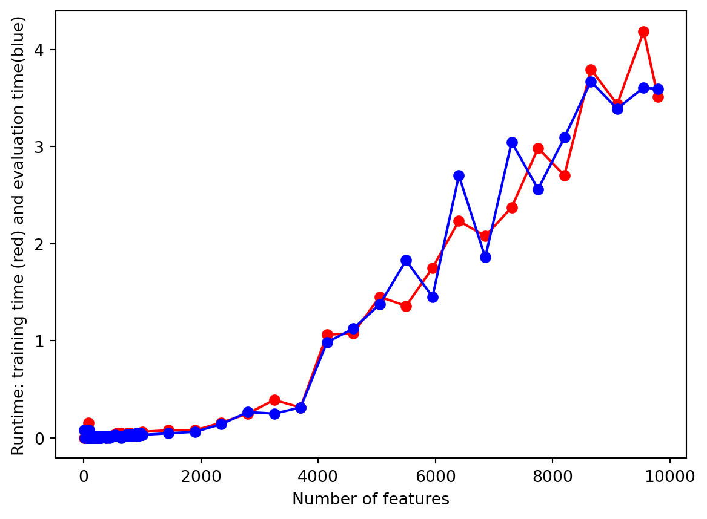
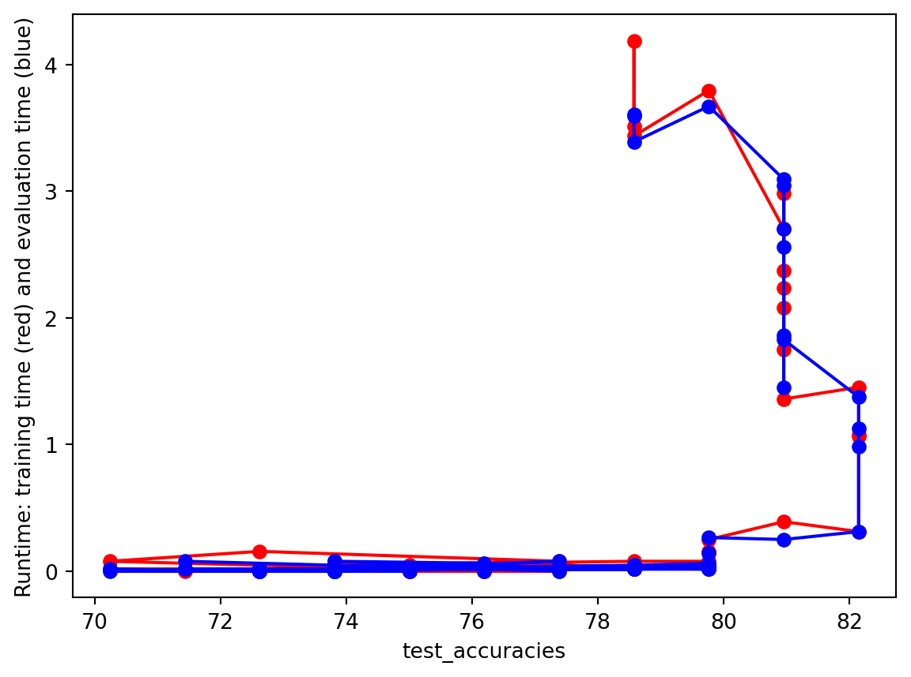
Based on the plots above, the optimal number of features for the linear kernel seems to be around 450. This number of features is where the test set accuracy is the highest and closest to the train set accuracy. It is also right before the point in which the model begins overfitting.
Gaussian Kernel Feature Selection
Code
(acc_train,acc_test,time_train,time_eval)=train_SVC_model(x,y1,'rbf')initialize_arrays()# DENSE SEARCH (SMALL NUMBER OF FEATURES (FAST))partial_grid_search(num_runs=100, min_index=0, max_index=1000)# SPARSE SEARCH (LARGE NUMBER OF FEATURES (SLOWER))partial_grid_search(num_runs=20, min_index=1000, max_index=10000)plot_results()
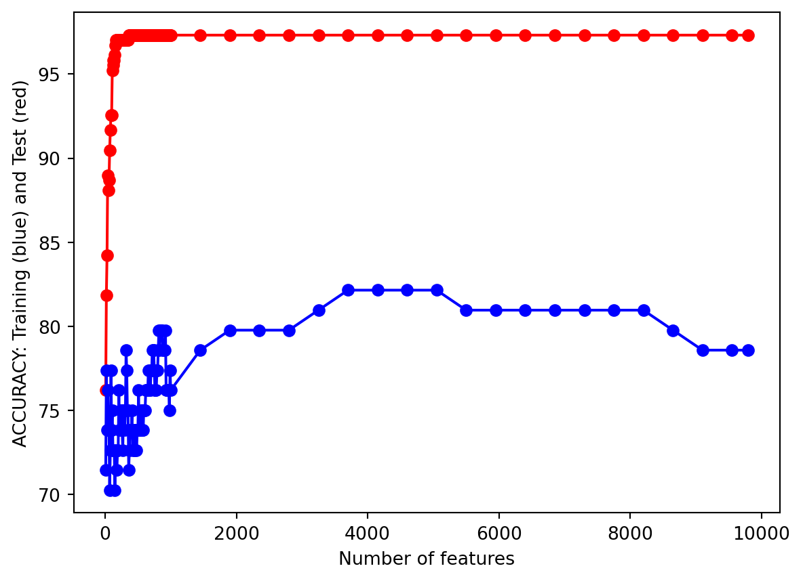
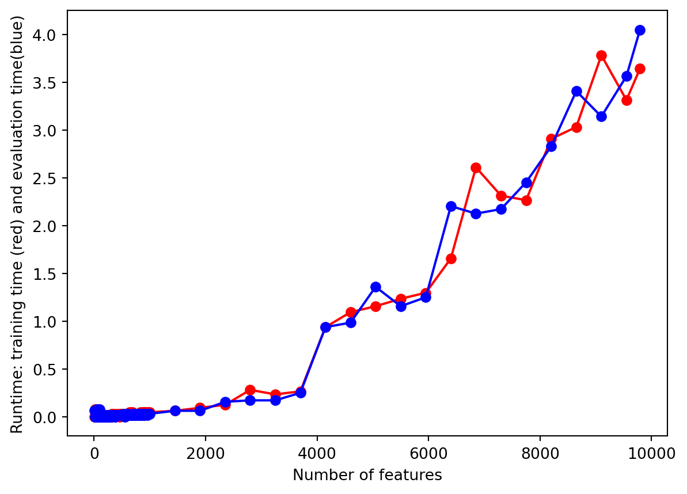
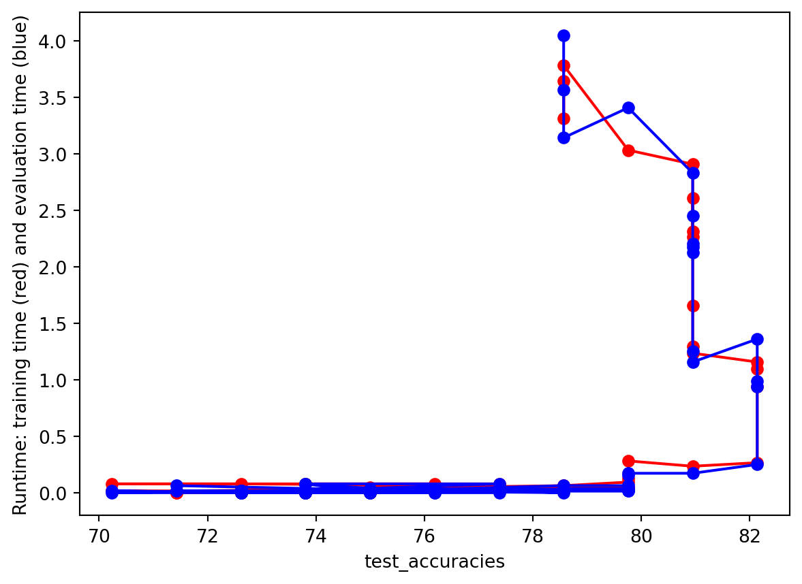
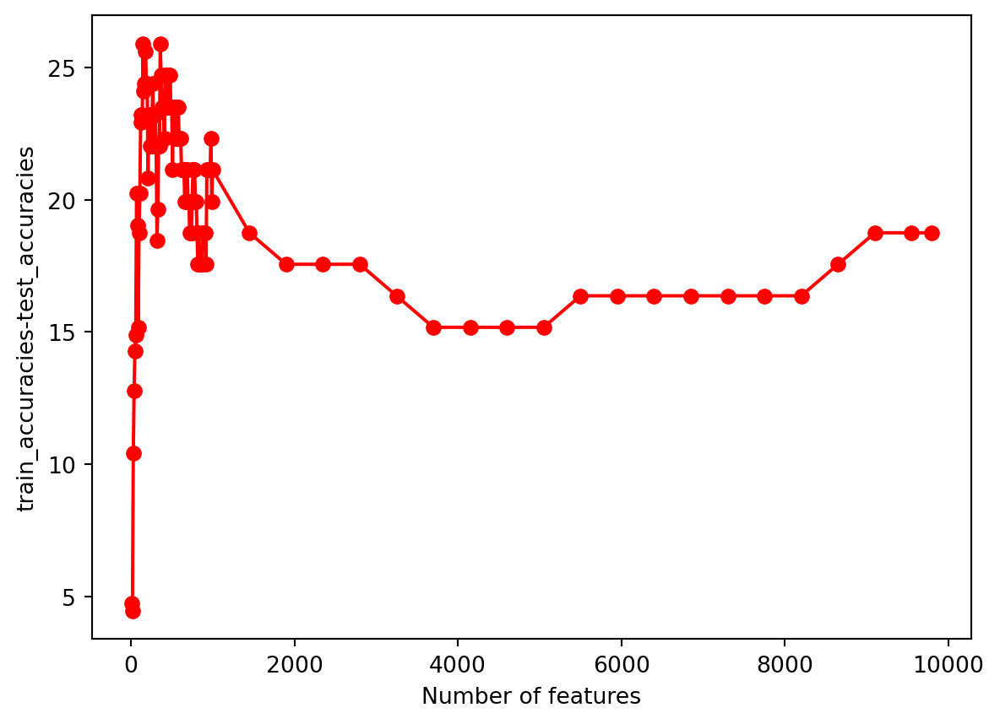
Based on the plots above, the optimal number of features for the linear kernel seems to be around 450. This number of features is where the test set accuracy is the highest and closest to the train set accuracy. It is also right before the point in which the model begins overfitting.
Sigmoid Kernel Feature Selection
Code
(acc_train,acc_test,time_train,time_eval)=train_SVC_model(x,y1,'sigmoid')initialize_arrays()# DENSE SEARCH (SMALL NUMBER OF FEATURES (FAST))partial_grid_search(num_runs=100, min_index=0, max_index=1000)# SPARSE SEARCH (LARGE NUMBER OF FEATURES (SLOWER))partial_grid_search(num_runs=20, min_index=1000, max_index=10000)plot_results()
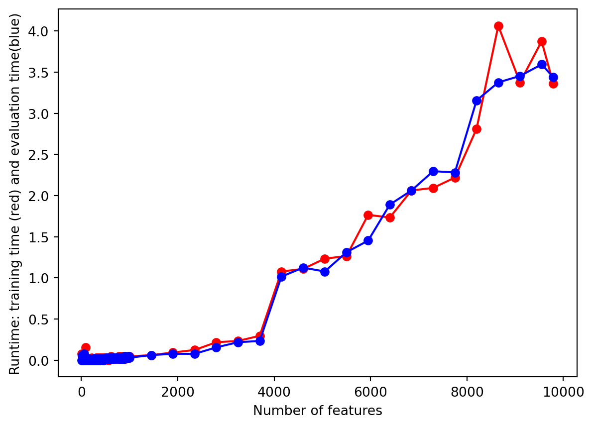
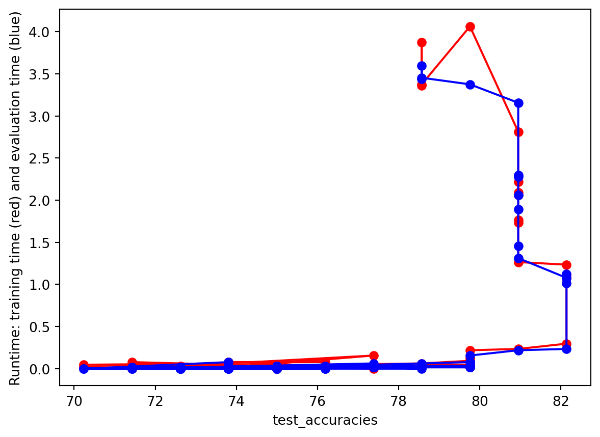
Based on the plots above, the optimal number of features for the linear kernel seems to be around 450. This number of features is where the test set accuracy is the highest and closest to the train set accuracy. It is also right before the point in which the model begins overfitting.
Polynomial Kernel Feature Selection
Code
(acc_train,acc_test,time_train,time_eval)=train_SVC_model(x,y1,'poly')initialize_arrays()# DENSE SEARCH (SMALL NUMBER OF FEATURES (FAST))partial_grid_search(num_runs=100, min_index=0, max_index=1000)# SPARSE SEARCH (LARGE NUMBER OF FEATURES (SLOWER))partial_grid_search(num_runs=20, min_index=1000, max_index=10000)plot_results()
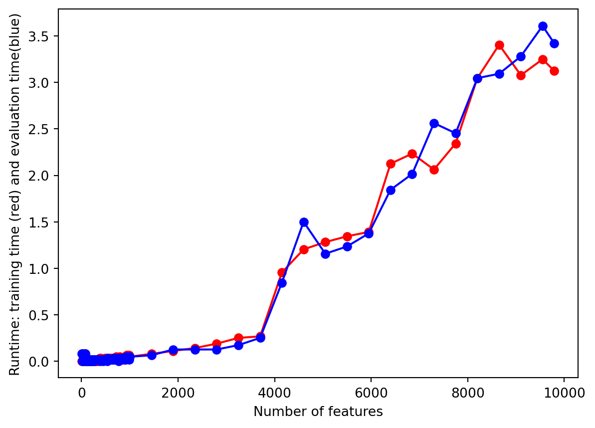
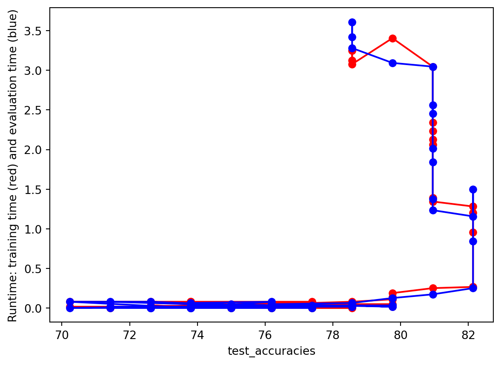
Based on the plots above, the optimal number of features for the linear kernel seems to be around 450. This number of features is where the test set accuracy is the highest and closest to the train set accuracy. It is also right before the point in which the model begins overfitting.
Split Data
Code
# PARTITION THE DATASET INTO TRAINING AND TEST SETSfrom sklearn.model_selection import train_test_splittest_ratio=0.2x_train, x_test, y_train, y_test = train_test_split(X[:, :3000], y1, test_size=test_ratio, random_state=1234, stratify=y1)y_train=y_train.flatten()y_test=y_test.flatten()accuracy_training_l = []accuracy_test_l = []
Model Tuning
There are multiple algorithms, or kernels, used by SVMs in performing classification. We will perform classification using linear, Gaussian, Sigmoid, and polynomial kernels, compare their performance, and choose the best kernel for this task.
Train Linear Kernel
Code
from sklearn.svm import SVCmodel = SVC(kernel='linear', random_state=1234)model = model.fit(x_train, y_train)
Linear Kernel Results
Code
# USE THE MODEL TO MAKE PREDICTIONS FOR THE TRAINING AND TEST SET yp_train = model.predict(x_train)yp_test = model.predict(x_test)accuracy_training_l.append(accuracy_score(y_train, yp_train))accuracy_test_l.append(accuracy_score(y_test, yp_test))# GENERATES A CONFUSION MATRIX PLOT AND PRINTS MODEL PERFORMANCE METRICSdef confusion_plot(y_data, y_pred): cm = confusion_matrix(y_data, y_pred) disp = ConfusionMatrixDisplay(confusion_matrix=cm) disp.plot()print('ACCURACY:', accuracy_score(y_data, y_pred))print('RECALL:', recall_score(y_data, y_pred, average='weighted'))print('PRECISION:', precision_score(y_data, y_pred, average='weighted')) plt.show()from sklearn.metrics import confusion_matrix, ConfusionMatrixDisplayprint("------TRAINING (Linear)------")confusion_plot(y_train,yp_train)print("------TEST (Linear)------")confusion_plot(y_test,yp_test)
The linear kernel resulted in training accuracy, recall, and precision scores of 0.97. It also had test accuracy and recall scores of about 0.66 and precision score of about 0.63. This suggests a noticeable degree of overfitting.
Train Gaussian Kernel
Code
model = SVC(kernel='rbf', random_state=1234)model = model.fit(x_train, y_train)
Gaussian Kernel Results
Code
# USE THE MODEL TO MAKE PREDICTIONS FOR THE TRAINING AND TEST SET yp_train = model.predict(x_train)yp_test = model.predict(x_test)accuracy_training_l.append(accuracy_score(y_train, yp_train))accuracy_test_l.append(accuracy_score(y_test, yp_test))print("------TRAINING (Gaussian)------")confusion_plot(y_train,yp_train)print("------TEST (Gaussian)------")confusion_plot(y_test,yp_test)
The Gaussian kernel resulted in training accuracy, recall, and precision scores of around 0.97. It also had test accuracy and recall scores of around 0.68 and precision score of around 0.47. This suggests a higher degree of overfitting than the linear kernel with worse accuracy, recall, and (most noticeably) precision scores.
Train Sigmoid Kernel
Code
model = SVC(kernel='sigmoid', random_state=1234)model = model.fit(x_train, y_train)
Sigmoid Kernel Results
Code
# USE THE MODEL TO MAKE PREDICTIONS FOR THE TRAINING AND TEST SET yp_train = model.predict(x_train)yp_test = model.predict(x_test)accuracy_training_l.append(accuracy_score(y_train, yp_train))accuracy_test_l.append(accuracy_score(y_test, yp_test))print("------TRAINING (Sigmoid)------")confusion_plot(y_train,yp_train)print("------TEST (Sigmoid)------")confusion_plot(y_test,yp_test)
The Sigmoid kernel resulted in training accuracy and recall scores of 0.85 and precision score of around 0.88. It also had test accuracy and recall scores of about 0.68 and a precision score of around 0.62. This suggests less overfitting than the linear and gaussian kernels.
Polynomial Kernel Hyperparameter Tuning
For the polynomial kernel, it is necessary to determine the degree of the polynomial. As such, we compare the accuracy for the training and test sets based on polynomial degrees ranging from 1 to 10. As the graph below shows, the best performance for both the training and test sets appears to be a polynomial degree of 1.
Code
accuracies_train = []accuracies_test = []numbers =range(1, 11)for i in numbers: model = SVC(kernel='poly', degree = i, random_state=1234) model.fit(x_train, y_train) yp_train = model.predict(x_train) yp_test = model.predict(x_test) cm_train = confusion_matrix(y_train, yp_train) ac_train = accuracy_score(y_train, yp_train) cm_test = confusion_matrix(y_test, yp_test) ac_test = accuracy_score(y_test, yp_test) accuracies_train.append(ac_train) accuracies_test.append(ac_test)plt.plot(numbers, accuracies_train, linewidth=1, color='b')plt.scatter(numbers, accuracies_train, c='b')plt.plot(numbers, accuracies_test, linewidth=1, color='r')plt.scatter(numbers, accuracies_test, c='r')plt.xlabel("Polynomial Degree")plt.ylabel("ACCURACY: Training (blue) and Test (red)")plt.style.use('fivethirtyeight')plt.show();plt.style.use('default')
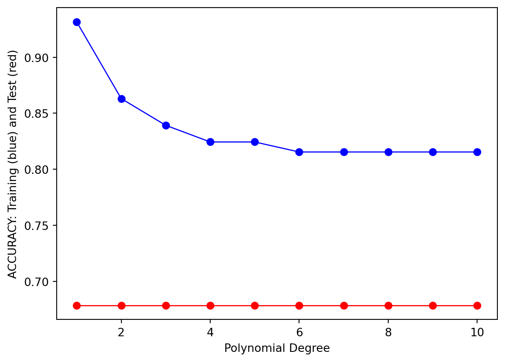
Train Polynomial Kernel
Code
model = SVC(kernel ='poly', degree =1, random_state=1234)model = model.fit(x_train, y_train)
Polynomial Kernel Results
Code
# USE THE MODEL TO MAKE PREDICTIONS FOR THE TRAINING AND TEST SET yp_train = model.predict(x_train)yp_test = model.predict(x_test)accuracy_training_l.append(accuracy_score(y_train, yp_train))accuracy_test_l.append(accuracy_score(y_test, yp_test))print("------TRAINING (Polynomial; degree=1)------")confusion_plot(y_train,yp_train)print("------TEST (Polynomial; degree=1)------")confusion_plot(y_test,yp_test)
The Polynomial kernel resulted in training accuracy, recall, and precision scores of around 0.93. It also had test accuracy and recall scores of about 0.68 and precision score of about 0.63. This suggests a noticeable degree of overfitting and a slightly better performance compared to the other kernels.
Comparing Models
To make comparison simpler, we create a plot for the accuracy scores of the four kernel types. The graph below shows that all four kernels have relatively similar degrees of training performance; however, the linear kernel appears to have the best test set accuracy.
The confusion matrices for all four kernal types show marginally better performance for accuracy, recall, and precision scores for both the training and test sets compared to the performance of the baseline random classifier. Among these kernels, we also determined that the linear kernel outperformed the other three in terms of accuracy, recall, and precision scores for both the training and test sets; however, based on the results from the above confusion matrix, it still appears that the “optimal” hyperparameters still result in a noticeable degree of overfitting.
Results
Our SVM model, given vectorized text data from various Wikipedia pages for searches that related to the keywords “Women’s rights” and “Men’s rights,” was able to classify such texts to either of the aforementioned search terms with an accuracy of 0.66. Based on the SVM classification results, we can see that our optimized model marginally outperforms the random classifier (accuracy=0.5 vs. accuracy=0.66), which is quite contrary to what would be expected. Additionally, the results from text classification using the SVM linear kernel resulted in a worse performing model than our naive bayes classification results (accuracy=0.66 vs. accuracy=0.82).
This is surprising, especially since SVMs generally outperform naive bayes classifiers because of its ability to generalize well in higher dimensional spaces. Perhaps this poor performance arises from our optimal model being linear. However, this result is still surprising, since the naive bayes algorithm assumes independence, while SVMs considers interactions between feature points, which we’d generally expect to result in better classification metrics.
Nonetheless, the model can definitely see some improvements. For example, obtaining more data to create a balanced data set may improve the classifier’s performance. Additionally, having more predictor variables with which the classifier could work may generally help fine-tune the classifier further (i.e. perform a deeper crawl of Wikipedia pages).
Conclusions
Our results from the SVM model and varying SVM kernels suggest that the Wikipedia text data for keywords “Women’s rights” and “Men’s rights” may not have significant enough distinguishing features (sentences and words) that make classifying certain sentences to either keyword very accurate. A contributing factor could be either the abundance or lack of Wikipedia pages and sentences gathered. In other words, having the WikiCrawl script search for too many related pages could cause the crawl to look at less and less related pages, which ends up diluting potentially significant sentences; likewise, having too little related pages would limit the number of potentially significant sentences, preventing the algorithm from learning the truly important sentences for classifying to either keyword.